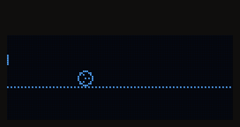
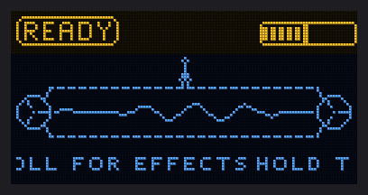
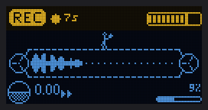
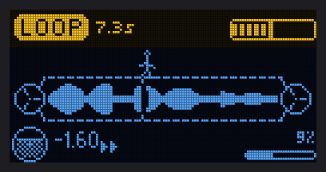
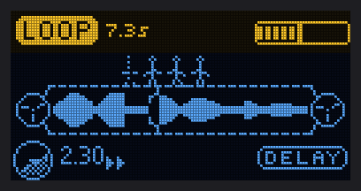
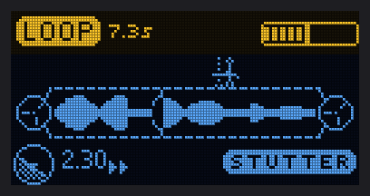
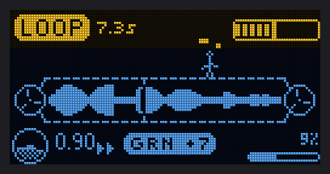
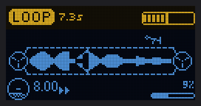
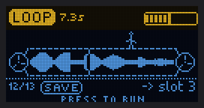
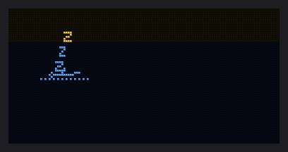

SAMPLOOLER
A small looper you play by tilting it.
Hold the button and make a sound. Let go and it loops. Tip the box forward and the loop runs faster, tip it back and it runs backwards, roll it sideways for a tape delay or a stutter. Open source, and it flashes from this page.
The same playback engine as the firmware, running in your browser. Hold the button to record from your microphone, or load the demo loop. On a phone, turn on tilt and tip the phone. On a computer, drag the slider.
Space records too. Headphones stop the loop from feeding back into the mic.
Hold the button and make a sound, up to 20 s at 32 kHz. Let go and it loops, from the first sound you made.
Forward plays faster, back plays backwards. Snap rounds the speed to octaves and fifths.
Left adds a tape delay, right a stutter.
TAPE: speed and pitch move together. GRAIN: they move apart.
Optional: 18 voices on the input before it records, from autotune and harmonies to a choir and a vocoder.
8 loops saved on the board, kept when you update it.
Over the radio with the other instruments: a take sets their tempo or lands on their beat, and key and scale are shared.
USB MIDI and a USB sound card on one cable, a VST3 plugin that shows and sets everything, and a desktop app that installs the instruments.
The loop is a tape between two reels, and a small operator runs on it, as fast as you tip the box. Turn the delay on and its echoes trail behind; stutter the loop and it stutters too; in GRAIN mode it juggles; tip all the way and it's flung off its feet. Leave it alone and it falls asleep.









Drawn by the firmware's own screen code, run on a computer.
The same box can be other instruments. Each one is its own firmware: install it from here, play it, and put the Samplooler back the same way. Your loops stay on the board. These have run on a board; more are on the way.
Install needs Chrome or Edge on a computer. Anyone can add an instrument: how. What comes next: the roadmap.
Both boards, every module soldered on, flashed and tested. Built by hand in Haifa. Write and ask about price and shipping.
Order the boards, solder the modules on, flash it from this page. Everything is open: firmware, schematics, boards and the parts list.
- Use Chrome or Edge on a computer. Phones cannot do this.
- Hold the BOOT button on the board while you plug it in, then let go. The running firmware uses USB for MIDI and audio, so the browser only finds the board this way.
- Press the button and pick the port.
- When it says done, unplug it and plug it in again. It may say the device was lost; that is normal.
It writes the program only: your loops and settings stay on the board, unless you tick Erase when it asks.
The Stack is two circuit boards, one above the other, with the usual modules soldered on. Both boards come as one panel from JLCPCB. An evening of through-hole soldering and six small capacitors.
Runs everything.
The microphone.
Line out on a 3.5 mm jack.
Tilt.
The 0.96" screen.
The controls.
Optional: a small speaker.
The output is line level: use headphones through a small amp, powered speakers, or a mixer. The boards are at rev C; rev D, the files in the repository, is being tested. The parts list, the order settings, what to check before powering up and the first power-on are in the build guide.
Firmware, instruments, tools, the desktop app.
The plugin (JUCE).
Circuit boards, docs and pictures.
Fork it, change it, sell your own. Keep it open and say where it came from. Bugs, questions and builds go in GitHub issues.